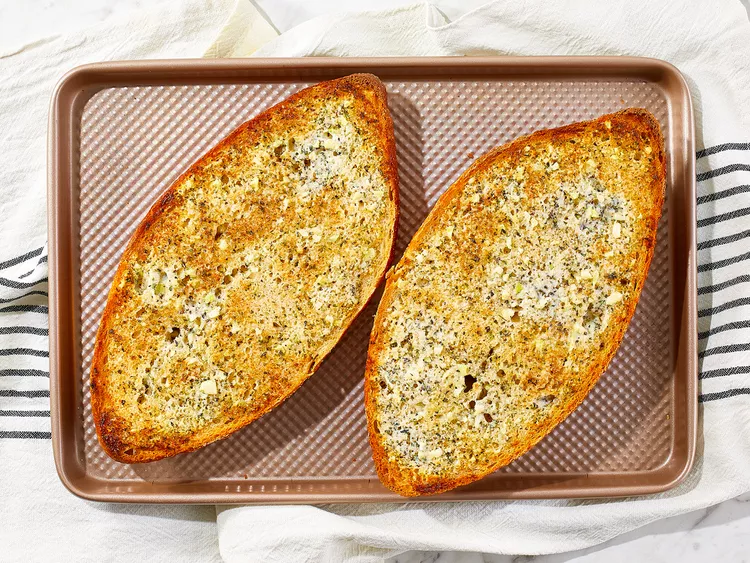

Description:
Garlic Bread is a delicious side dish. Often served as a side with pizza, but can also be eaten on it's own.
Ingredients
- Butter
- Parmesan cheese
- Garlic
- Marjoram
- Herbs
- Black Pepper
- Italian Bread
Steps
- Gather ingredients.
- Mix butter, cheese, garlic, marjoram, herbs, pepper into a bowl until combined.
- Spread butter on bread.
- Heat in the oven for 10 to 15 minutes.
Home